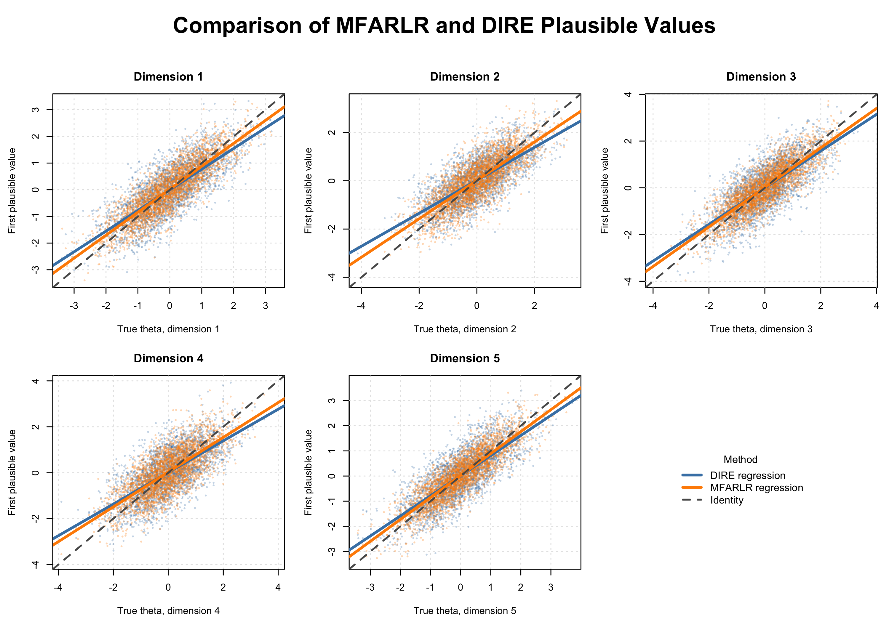

FARL: Use Factor-Augmented Regularized Latent Regression for Large-Scale Assessment
Source:vignettes/FARL.Rmd
FARL.RmdIntroduction
The FARL package implements factor-augmented regularized
latent regression (FARLR) for large-scale assessments. FARLR addresses
high-dimensional, strongly dependent background variables by separating
their common variation from covariate-specific information.
Common-factor scores enter the latent regression, while sparse
regularization identifies a smaller set of additional background
variables associated with achievement.
For multidimensional assessments, MFARLR extends the same strategy to several correlated latent traits. It estimates the regression coefficients and the full residual covariance jointly. This preserves dependence among dimensions when plausible values are generated for population and subgroup analyses.
The package supports:
- unidimensional FARLR estimation through
Farlr_mml(); - unidimensional PCA-based DIRE estimation through
Dire_mml(); - multidimensional FARLR-GVEM estimation through
MFARLR_mml(); - multidimensional DIRE estimation through
MDIRE_mml(); and - plausible-value generation for all fitted models.
This vignette first presents the unidimensional workflow and then the multidimensional workflow. The emphasis is on preparing data, fitting models, interpreting returned objects, generating plausible values, and conducting secondary analyses rather than on mathematical derivations.
Installation and loading
The development version can be installed with:
if (!requireNamespace("devtools", quietly = TRUE)) {
install.packages("devtools")
}
devtools::install_github(
"MAP-LAB-UW/FARL",
build_vignettes = TRUE
)
torch::install_torch()Common data interface
The main fitting functions use a common set of data objects.
| Function | Covariates | Responses | Item parameters |
|---|---|---|---|
Farlr_mml() |
X |
Y |
parTab |
MFARLR_mml() |
X |
Y |
parTab |
MDIRE_mml() |
X |
Y |
parTab |
Rows of X and Y must refer to the same
respondents, and rows of parTab must follow the item-column
order in Y. The unidimensional section first shows how to
construct parTab. The additional MFARLR control object is
introduced later, when the multidimensional model is fitted.
Unidimensional FARLR
The two unidimensional FARLR estimation strategies differ in how they reduce the bias introduced by penalized variable selection.
| Method | Main idea | Advantage 1 | Advantage 2 |
|---|---|---|---|
FARLR_EMM |
Uses the importance-sampling-based EMM algorithm (ISEMM). Each iteration includes an importance-sampling E-step, a penalized M-step that performs variable selection using LASSO, and a second unpenalized M-step that refits the selected active set. | Produces stable subgroup mean and variance estimates, particularly for moderate and large subgroups. | Remains comparatively robust in high-dimensional settings. |
FARLR_Debias |
Uses an importance-sampling-based EM algorithm. After separating the factor and idiosyncratic components, the penalized M-step obtains LASSO estimates, followed by a debiasing correction to the idiosyncratic coefficients. | More accurately identifies covariates with truly nonzero effects. | Performs especially well for small subgroups in high-dimensional settings. |
Farlr_mml() provides a common interface for two
estimators.
Parameters passed directly to FARLR_mml()
Both methods evaluate candidate lambda values, use the
same convergence criterion, and select lambda by BIC. Use
FARLR_EMM for LASSO selection followed by active-set
refitting, and FARLR_Debias when explicit correction of
regularization shrinkage is desired.
The examples in this section use Farlr_mml() to fit the
model and Farlr_drawPVs() to generate plausible values.
Prepare the data
Farlr_mml() uses three required data objects.
| Object | Required organization | Purpose |
|---|---|---|
X |
Respondents by covariates | Background variables used in the population model. All columns must be numeric, finite, and have nonzero variance. |
Y |
Respondents by items | Item responses. Rows must correspond exactly to the
rows of X. Missing responses may be coded
NA. |
parTab |
One row per item | Fixed item parameters. Its row order must match the
column order of Y. |
The package supports binary 1PL, 2PL, and 3PL items, as well as three-category GPCM items. Binary responses must be coded 0/1, and GPCM responses must be coded 0/1/2. The package determines item type from the supplied item parameters.
Construct a unidimensional parTab
parTab is an item-level data frame. It must have exactly
one row for every column of Y, in the same order. The
sim_a1 table can be constructed as follows.
item_difficulty <- c(
0.68394525, 0.92141771, 1.57513353,
1.63897827, 0.06180150, 0.02206284
)
item_slope <- c(
0.7808753, 1.0839744, 0.6168007,
1.1808368, 0.8086742, 1.0941187
)
parTab_a1 <- data.frame(
item = seq_along(item_slope),
b = item_difficulty,
a = item_slope,
c = 0,
ItemID = paste0("item", seq_along(item_slope)),
test = "comp",
subtest = "main",
slope = item_slope,
difficulty = item_difficulty,
guessing = 0,
D = 1L
)
parTab_a1
# item b a c ItemID test subtest slope difficulty
# 1 0.68394525 0.7808753 0 item1 comp main 0.7808753 0.68394525
# 2 0.92141771 1.0839744 0 item2 comp main 1.0839744 0.92141771
# 3 1.57513353 0.6168007 0 item3 comp main 0.6168007 1.57513353
# 4 1.63897827 1.1808368 0 item4 comp main 1.1808368 1.63897827
# 5 0.06180150 0.8086742 0 item5 comp main 0.8086742 0.06180150
# 6 0.02206284 1.0941187 0 item6 comp main 1.0941187 0.02206284The columns have the following roles.
| Column | Meaning |
|---|---|
item |
Item sequence number. Row order must match the columns
of Y. |
a |
Item discrimination or slope used by
Farlr_mml(). |
b |
Item difficulty. FARL converts it internally to the intercept needed by the response model. |
c |
Guessing parameter. Set it to zero for 1PL/2PL items and to a value between zero and one for 3PL items. |
ItemID |
Readable item identifier. It should be unique. |
test |
Test label retained as item metadata. |
subtest |
Subtest label retained as item metadata. For this
unidimensional example all items use "main". |
slope |
Descriptive duplicate of a, retained for
compatibility with other interfaces. |
difficulty |
Descriptive duplicate of b. |
guessing |
Descriptive duplicate of c. |
D |
Unidimensional metadata flag. It is 1 for
every item in this example. |
For Farlr_mml(), the essential columns in this 2PL
example are a, b, and c. The
remaining columns provide identifiers and compatibility metadata. If
intercepts are already available, supply d instead of
b.
The required item parameters change with item type:
| Item type | Required information in parTab
|
Response coding |
|---|---|---|
| 1PL/2PL |
a, either b or
d, and c = 0
|
0/1, with optional NA
|
| 3PL |
a, either b or
d, and a nonzero c between 0 and 1 |
0/1, with optional NA
|
| Three-category GPCM |
a, b1, and b2;
c may be zero or omitted |
0/1/2, with optional NA
|
Example data
sim_a1 contains 300 respondents, 100 background
variables, and six binary 2PL items. The true latent trait is retained
only for simulation diagnostics.
data(sim_a1)
dim(sim_a1$X)
# [1] 300 100
dim(sim_a1$Y)
# [1] 300 6
head(sim_a1$Y)
# i001 i002 i003 i004 i005 i006
# [1,] 1 1 0 0 0 1
# [2,] 0 1 0 1 0 0
# [3,] 1 0 1 0 0 1
# [4,] 0 0 0 0 1 1
# [5,] 0 0 0 0 0 1
# [6,] 0 0 0 0 1 1
head(sim_a1$X[, 1:6])
# [,1] [,2] [,3] [,4] [,5] [,6]
# [1,] 0 1 0 1 0 0.2837093
# [2,] 1 1 1 1 1 0.9718186
# [3,] 1 1 1 1 1 1.2179341
# [4,] 1 1 1 1 1 1.7088599
# [5,] 0 0 0 0 0 -3.5649492
# [6,] 1 1 1 1 1 1.2663585
sim_a1$parTab
# item b a c ItemID test subtest slope difficulty
# 1 0.68394525 0.7808753 0 item1 comp main 0.7808753 0.68394525
# 2 0.92141771 1.0839744 0 item2 comp main 1.0839744 0.92141771
# 3 1.57513353 0.6168007 0 item3 comp main 0.6168007 1.57513353
# 4 1.63897827 1.1808368 0 item4 comp main 1.1808368 1.63897827
# 5 0.06180150 0.8086742 0 item5 comp main 0.8086742 0.06180150
# 6 0.02206284 1.0941187 0 item6 comp main 1.0941187 0.02206284Before fitting the model, verify row alignment, item alignment, response codes, and missingness.
Choose primary covariates
The main argument identifies covariates that must remain
in the population model. These variables are not removed by penalized
selection. Supply their column indices in X.
main <- c(1, 2, 15, 29, 45)
main_names <- if (is.null(colnames(sim_a1$X))) {
paste0("X", main)
} else {
colnames(sim_a1$X)[main]
}
main_names
# [1] "X1" "X2" "X15" "X29" "X45"Use main = integer(0) when every original covariate may
be selected or excluded by regularization.
Fit FARL
Main fitting arguments
| Argument | Applied meaning |
|---|---|
X, Y,
parTab
|
Data objects described above. |
method |
Selects "FARLR_EMM" or
"FARLR_Debias". |
main |
Column indices of primary covariates that remain in the model. |
lambda |
Candidate regularization values. A wider grid is useful when the selected value falls at an endpoint. |
n_sam |
Monte Carlo sample size used during fitting. Larger values reduce simulation noise but increase runtime. |
n_sam_final |
Monte Carlo sample size used in the final evaluation or debiased update. |
K_hat |
Optional number of common factors. When omitted, FARL estimates it using parallel analysis. |
delta.criteria |
Convergence tolerance for iterative updates. |
iter.max |
Maximum number of iterations for each candidate regularization value. |
window.size |
Number of recent updates used for stabilization. |
proposal_inflation |
Controls the spread of the latent-trait proposal distribution used during Monte Carlo integration. |
seed |
Makes factor selection and Monte Carlo calculations reproducible. |
progress, verbose
|
Control progress bars and printed fitting information. |
The defaults provide a convenient starting point. For a final
analysis, inspect convergence and check whether results remain stable
with larger Monte Carlo sample sizes and a broader lambda
grid.
Fit FARLR-Debias
This fit uses ISEM together with the paper’s debiasing step.
mmlcomp_debias <- with(
sim_a1,
Farlr_mml(
X = X,
Y = Y,
parTab = parTab,
method = "FARLR_Debias",
main = main,
lambda = seq(0.05, 0.50, length.out = 10),
n_sam = 25L,
n_sam_final = 60L,
seed = 2026,
progress = TRUE
)
)
# |++++++++++++++++++++++++++++++++++++++++++++++++++| 100% elapsed=00s
# |==============================================================================| 100%Fit FARLR-EMM
This fit uses the paper’s ISEMM procedure. The input interface is the
same; only method changes.
mmlcomp_emm <- with(
sim_a1,
Farlr_mml(
X = X,
Y = Y,
parTab = parTab,
method = "FARLR_EMM",
main = main,
lambda = seq(0.05, 0.50, length.out = 10),
n_sam = 25L,
n_sam_final = 60L,
seed = 2026,
progress = TRUE
)
)
# |++++++++++++++++++++++++++++++++++++++++++++++++++| 100% elapsed=00s
# |==============================================================================| 100%Examine a fitted FARL model
The fitted object contains the coefficient estimates together with the factor-adjusted design, item information, scaling values, and fitting diagnostics needed for later plausible-value generation.
| Component | Interpretation |
|---|---|
coefficients |
Named regression coefficients. Names beginning with
FS refer to common-factor scores; names beginning with
X refer to original covariates. |
sigma |
Residual standard deviation of the latent trait after conditioning on the fitted predictors. |
lambda |
Selected regularization value. |
LogLik |
Objective or likelihood summary returned for the selected model. |
Convergence |
Method-specific convergence indicator. |
factor_scores |
Estimated common-factor scores for each respondent. |
K_hat |
Number of common factors used in the fitted model. |
hatU |
Factor-adjusted covariates used by
FARLR_Debias. |
Fan |
Final factor-plus-adjusted-covariate design used by
FARLR_Debias. |
X, X_center,
X_scale
|
Standardized covariates and the values used to standardize them. |
item_params, item_type
|
Item parameters and detected response-model type. |
stuDat, stuItems
|
Subject-level design information and long-format item responses retained for compatibility and PV generation. |
Check method and convergence
mmlcomp_debias$method
# [1] "FARLR_Debias"
mmlcomp_debias$K_hat
# [1] 2
mmlcomp_debias$lambda
# [1] 0.05
mmlcomp_debias$LogLik
# [1] -281.1571
mmlcomp_debias$Convergence
# [1] "Converged"If the selected lambda is the smallest or largest
candidate, extend the grid and refit. If the model does not converge,
increase iter.max, review the input variables, and assess
stability across seeds and Monte Carlo settings.
Summarize coefficients
Printing every coefficient is difficult when X is wide.
A compact table of the largest coefficients is usually more
informative.
coefficient_table <- data.frame(
predictor = names(mmlcomp_debias$coefficients),
coefficient = as.numeric(mmlcomp_debias$coefficients),
row.names = NULL
)
coefficient_table$source <- ifelse(
grepl("^FS", coefficient_table$predictor),
"Common factor",
"Original covariate"
)
coefficient_table <- coefficient_table[
order(abs(coefficient_table$coefficient), decreasing = TRUE),
]
head(coefficient_table, 15L)
# predictor coefficient source
# 73 X71 0.6400820 Original covariate
# 2 FS2 0.5169816 Common factor
# 78 X76 0.4347478 Original covariate
# 91 X89 -0.4185053 Original covariate
# 90 X88 0.3937220 Original covariate
# 26 X24 -0.3324180 Original covariate
# 37 X35 0.2714997 Original covariate
# 81 X79 -0.2629103 Original covariate
# 61 X59 -0.2584331 Original covariate
# 30 X28 0.2282416 Original covariateA positive coefficient indicates that higher values of the predictor are associated with a higher population mean for the latent trait, holding the other included predictors constant. Coefficients describe associations and should not be interpreted causally.
The common-factor scores summarize shared variation across
X. Covariate coefficients represent information that
remains useful after the factor adjustment. Primary variables supplied
through main should be interpreted alongside the selected
covariates rather than as a separate model.
Interpret residual variation
sigma is a residual standard deviation, not a variance.
A smaller value indicates that the fitted population model leaves less
latent-trait variation unexplained. Comparisons are most useful when the
same data, item parameters, and latent scale are used.
Inspect the factor-adjusted design
dim(mmlcomp_debias$factor_scores)
# [1] 300 2
head(round(mmlcomp_debias$factor_scores,3))
# FS1 FS2
# [1,] -0.693 -0.710
# [2,] 0.486 0.773
# [3,] -1.008 0.773
# [4,] 0.693 1.312
# [5,] -1.466 -2.770
# [6,] 0.638 1.147
dim(mmlcomp_debias$hatU)
# [1] 300 100
dim(mmlcomp_debias$Fan)
# [1] 300 102FARLR_Debias uses Fan, which combines
common-factor scores and factor-adjusted covariates. These stored
objects are useful for reconstructing the fitted design during
plausible-value generation and for diagnosing unexpected coefficients in
the fitted sample.
Generate plausible values
Farlr_drawPVs() combines the fitted population model
with each respondent’s observed item responses. It returns plausible
values together with posterior summaries that are useful for checking
the generated draws. Plausible values are intended for population and
subgroup analyses, not for reporting an individual’s single score.
Plausible-value arguments
| Argument | Applied meaning |
|---|---|
mmlcomp |
Object returned by Farlr_mml(). |
npv |
Number of plausible values generated for each respondent. |
n_quad |
Number of points used to approximate each respondent’s posterior distribution. |
theta_range |
Lower and upper limits of the initial latent-score grid. |
adaptive_range |
When TRUE, allows the grid to expand for
respondents whose fitted prior lies near or beyond the initial
limits. |
range_sd |
Controls how far the adaptive grid extends around the fitted prior mean. |
design_matrix |
Optional replacement design matrix. Normally omitted so that FARL reconstructs the fitted design automatically. |
theta |
Optional true trait values used only for simulation diagnostics. Omit this argument for real data. |
seed |
Makes plausible-value generation reproducible. |
return_details |
When TRUE, returns the PV matrix and
posterior summaries in a list. |
Draw plausible values
farl_pvs <- Farlr_drawPVs(
mmlcomp = mmlcomp_debias,
npv = 10L,
n_quad = 30L,
theta_range = c(-4, 4),
adaptive_range = TRUE,
range_sd = 1,
seed = 2026,
progress = TRUE,
return_details = TRUE
)
# |==============================================================================| 100%For simulation studies, theta = sim_a1$theta may be
added to report the difference between the average posterior estimate
and the average true trait. It should not be supplied in an empirical
analysis.
Examine plausible-value output
| Component | Interpretation |
|---|---|
data |
Numeric matrix containing only the plausible values. |
datPVs |
Data frame containing respondent IDs and columns
_farl1, _farl2, and so on. |
EAP_estimates |
Respondent-level posterior means. |
EAP_variance |
Respondent-level posterior variances. |
posterior_mode |
Most likely grid value for each respondent. |
prior_mean |
Latent-regression mean predicted by the fitted population model. |
sigma |
Residual standard deviation copied from the fitted model. |
mean_difference |
Simulation-only mean recovery diagnostic;
NA when theta is omitted. |
head(farl_pvs$datPVs)
# id _farl1 _farl2 _farl3 _farl4 _farl5
# 1 0.4415057 -0.39299729 0.24264142 0.1258383 -0.17760220
# 2 0.2174657 0.05058925 0.31419779 0.3119294 -0.89014627
# 3 -0.2252654 -0.13906095 -0.78423791 0.7180437 -0.02715238
# 4 -0.0520972 0.30991841 0.09067852 0.3965440 0.31826952
# 5 -2.1700373 -1.07371436 -2.19664464 -1.3406977 -1.98672013
# 6 -0.5599810 -0.05541882 -0.43469715 0.2878315 -0.28505926 Large posterior variances identify respondents whose response
patterns provide less information about the latent trait. Differences
between prior_mean and EAP_estimates show how
the observed item responses update predictions from the background
variables.
Mixed 3PL and GPCM responses
The same FARL workflow applies when the assessment contains both
binary 3PL items and three-category GPCM items. sim_a2
demonstrates this case.
data(sim_a2)
dim(sim_a2$X)
# [1] 300 100
dim(sim_a2$Y)
# [1] 300 6
table(sim_a2$itemtype)
# 3PL gpcm
# 3 3
sim_a2$parTab[, c(
"ItemID", "itemtype", "a", "b", "c", "b1", "b2"
)]
# ItemID itemtype a b c b1 b2
# item1 3PL 0.7808753 0.6839453 0.2364617 NA NA
# item2 gpcm 1.0839744 NA 0.0000000 0.4103240 1.2342899
# item3 3PL 0.6168007 0.9214177 0.1773176 NA NA
# item4 gpcm 1.1808368 NA 0.0000000 -1.1282366 -0.0933918
# item5 3PL 0.8086742 1.5751335 0.1758274 NA NA
# item6 gpcm 1.0941187 NA 0.0000000 -0.1558467 0.7680919Fit the model and generate PVs using the same public functions.
mmlcomp_mixed <- with(
sim_a2,
Farlr_mml(
X = X,
Y = Y,
parTab = parTab,
method = "FARLR_Debias",
main = main,
seed = 2026
)
)
# |++++++++++++++++++++++++++++++++++++++++++++++++++| 100% elapsed=00s
# |==============================================================================| 100%
table(mmlcomp_mixed$item_type)
# 3pl gpcm
# 3 3
pvs_mixed <- Farlr_drawPVs(
mmlcomp = mmlcomp_mixed,
npv = 10L,
adaptive_range = TRUE,
seed = 2026
)
# |==============================================================================| 100%
head(pvs_mixed$datPVs)
# id _farl1 _farl2 _farl3 _farl4 _farl5
# 1 -0.44981607 -1.1822068 -0.62434674 -0.7268575 -0.99316810
# 2 0.94040775 0.7950428 1.02467040 1.0226945 -0.02442559
# 3 -0.32120661 -0.2483761 -0.79345840 0.4757547 -0.15382940
# 4 -0.19328627 0.1077317 -0.07456747 0.1797614 0.11467569
# 5 -1.62911580 -0.7149930 -1.65130125 -0.9376058 -1.47626451
# 6 0.09680734 0.5244688 0.20299657 0.8154040 0.32982803 For mixed-format assessments, check that every parTab
row contains the parameters required by its item type. Missing responses
remain coded as NA and are ignored for the corresponding
item during posterior calculation.
Unidimensional practical checks
Before reporting a FARL analysis, verify the following:
- rows of
XandYrefer to the same respondents; - rows of
parTabmatch the item-column order inY; - covariates are numeric and have nonzero variance;
- response codes agree with their item types;
- primary covariates in
mainare the intended columns ofX; - the selected
lambdais not constrained by an inadequate grid; - fitting results are stable across Monte Carlo seeds and larger sample sizes;
-
sigmais positive and convergence diagnostics are acceptable; and - all plausible values, rather than their respondent-level average, are used in secondary analyses.
Multidimensional FARLR and DIRE comparison
Multidimensional large-scale assessments must model both high-dimensional, correlated background variables and dependence among latent traits. A PCA-only population model can discard low-variance covariate information that remains predictive of achievement, while fitting latent-trait covariances separately can yield an incoherent covariance estimate. MFARLR instead combines common factors with sparsely selected covariates and estimates the dimensions jointly.
In practice, MFARLR uses the background variables to predict each latent dimension while retaining correlations among the dimensions. It combines common-factor scores with selected covariates, then estimates the regression coefficients and residual covariance jointly. The current multidimensional implementation supports binary 2PL items, so guessing parameters must be zero.
This example reports not only the final plausible values, but also the selection matrix, regression coefficients, residual covariance, variational posterior moments, and convergence diagnostics produced during estimation.
Input data
The multidimensional functions retain the same compact data
interface. Both models receive X, Y, and
parTab; item slopes, intercepts, and dimension assignments
are obtained from parTab internally. In this simulation,
theta is also available for evaluating recovery, but it is
never supplied to the fitting function.
| Object | Required shape | Role |
|---|---|---|
X |
Respondents by covariates | Background variables used to construct common-factor scores and factor-adjusted residual covariates. Values must be finite. |
Y |
Respondents by items | Binary item responses coded 0/1. Missing responses may
be coded NA; they are omitted during estimation. |
parTab |
One row per item | Fixed item parameters and dimension assignments. It supplies the slopes, intercepts or difficulties, and the latent dimension measured by each item. |
main |
Integer column indices | Primary covariates that are not penalized during dimension-specific FARLR screening. |
theta |
Respondents by dimensions | True latent traits available only in the simulation; used below to calculate recovery statistics. |
MFARLR_mml() still requires parTab; it
cannot infer item parameters from Y. The construction
follows the unidimensional example above, with one additional
item-dimension column such as dimension or
subtest. The current MFARLR implementation supports binary
2PL items, so c or guessing must be zero. The
example below uses the prepared sim_m1$parTab table.
data(sim_m1)
dim(sim_m1$X)
# [1] 3000 60
dim(sim_m1$Y)
# [1] 3000 30
dim(sim_m1$theta)
# [1] 3000 5
head(sim_m1$parTab)
#item dimension b a d c ItemID test
# 1 1 1 0.9090085 1.0852796 -0.9865284 0 item1 mcomp dimension1
# 2 2 1 -1.4605271 0.9679681 1.4137436 0 item2 mcomp dimension1
# 3 3 1 0.7797827 0.8828721 -0.6884484 0 item3 mcomp dimension1
# 4 4 1 -0.2210281 1.1166641 0.2468141 0 item4 mcomp dimension1
# 5 5 1 -0.7199442 1.0148336 0.7306235 0 item5 mcomp dimension1
# 6 6 1 0.8171910 1.1513335 -0.9408594 0 item6 mcomp dimension1 The item-parameter parser accepts either a complete loading matrix
for cross-loading items or a simple-structure representation with one
slope and one dimension label per item. If difficulty or
b is supplied instead of an intercept, FARL converts it
internally. The stored d values are therefore on the
logit-intercept scale, not the conventional item-difficulty scale.
Fit MFARLR-GVEM
MFARLR uses three steps. First, factor analysis summarizes the common
variation in the standardized covariates. Second,
FARLR_Debias screens covariates within each latent
dimension and records a dimension-specific selection pattern. Third,
these selected positions are held fixed while GVEM jointly updates the
coefficient matrix, person-specific variational moments, and the full
latent residual covariance. The Gaussian variational posterior makes
these updates computationally feasible without multidimensional
quadrature.
Parameters passed directly to MFARLR_mml()
| Parameter | Meaning |
|---|---|
X, Y,
parTab
|
Data objects described above. The rows of
X and Y must refer to the same respondents,
and parTab must have one row per item. |
farlr_args |
Named list forwarded to each dimension-specific call to
Farlr_mml(method = "FARLR_Debias"). It controls the
preliminary factor analysis, variable selection, and debiasing
step. |
selection_tol |
A preliminary coefficient is selected when its absolute value is greater than this tolerance. It determines the fixed zero/nonzero pattern used by the joint GVEM step. |
sigma_start |
Optional positive-definite starting covariance matrix. The identity matrix is used when it is omitted. |
xi_start |
Optional positive respondents-by-items matrix of starting values. A matrix of ones is used by default. |
max_iter |
Maximum number of joint GVEM iterations after dimension-specific screening. |
threshold |
Convergence tolerance for the largest absolute change across the coefficient matrix and residual covariance matrix. |
progress, verbose
|
Control the progress bar and printed diagnostic messages. |
Parameters inside farlr_args
These arguments affect only the preliminary unidimensional screening
fits. The method is fixed internally to "FARLR_Debias" for
every dimension.
| Parameter | Meaning in the screening step |
|---|---|
n_sam |
Number of Monte Carlo latent-trait draws per respondent used during preliminary marginal-likelihood approximation. Larger values reduce Monte Carlo noise but increase computation. |
lambda |
Candidate regularization values. The selected value controls the sparsity of each dimension-specific regression. |
main |
Column indices of designated predictors in
X that are treated as unpenalized primary variables in the
factor-adjusted regression. |
delta.criteria |
Convergence tolerance for the internal FARLR iterative updates. |
iter.max |
Maximum iterations for each preliminary fit. This is
distinct from the outer max_iter used by joint GVEM. |
window.size |
Number of recent coefficient updates used by the stabilization or averaging step in preliminary estimation. |
seed |
Random seed for the Monte Carlo draws, making screening reproducible. |
proposal_inflation |
Inflation applied to the latent proposal distribution used for Monte Carlo integration. |
n_sam_final |
Number of draws used in the final preliminary evaluation or debiased update. |
progress, verbose
|
Control output from each dimension-specific fit. |
Construct the shared farlr_args
farlr_args is one shared named list, not one list per
dimension. Internally, MFARLR_mml() fits each dimension
separately with Farlr_mml(method = "FARLR_Debias") and
passes this same list to every fit. Consequently, all dimensions use the
same Monte Carlo settings, candidate lambda grid, primary
covariates, convergence controls, and seed. Each dimension still has its
own response items and produces its own selected lambda,
coefficients, and fitted result.
farlr_control <- list(
n_sam = 5L,
lambda = c(0.05, 0.10),
main = sim_m1$main,
delta.criteria = 1e-2,
iter.max = 20L,
window.size = 200L,
progress = FALSE,
verbose = FALSE,
seed = 123,
K_hat = NULL,
proposal_inflation = 0.2,
n_sam_final = 10L,
paran_iterations = 500L,
paran_centile = 0
)Do not include X, Y, parTab,
or method in this list. Those arguments are protected
because MFARLR_mml() supplies the appropriate data and
fixes the preliminary method to "FARLR_Debias". Joint-model
controls such as selection_tol, sigma_start,
xi_start, max_iter, and threshold
must be passed directly to MFARLR_mml(), outside
farlr_args.
The current interface does not accept a list of dimension-specific
control lists. Supporting different main,
lambda, or Monte Carlo settings for each dimension would
require a separate interface or a modification to
MFARLR_mml().
The small Monte Carlo settings below keep the example quick. A
substantive analysis should assess stability with larger
n_sam, n_sam_final, and a broader
regularization grid.
mmlcomp_mfarlr <- MFARLR_mml(
X = sim_m1$X,
Y = sim_m1$Y,
parTab = sim_m1$parTab,
farlr_args = farlr_control,
selection_tol = 1e-8,
max_iter = 500L,
threshold = 1e-3,
verbose = TRUE
)
# |++++++++++++++++++++++++++++++++++++++++++++++++++| 100% elapsed=00s
# Dimension 1: selected 16 of 64 coefficients.
# |++++++++++++++++++++++++++++++++++++++++++++++++++| 100% elapsed=00s
# Dimension 2: selected 15 of 64 coefficients.
# |++++++++++++++++++++++++++++++++++++++++++++++++++| 100% elapsed=00s
# Dimension 3: selected 16 of 64 coefficients.
# |++++++++++++++++++++++++++++++++++++++++++++++++++| 100% elapsed=00s
# Dimension 4: selected 9 of 64 coefficients.
# |++++++++++++++++++++++++++++++++++++++++++++++++++| 100% elapsed=00s
# Dimension 5: selected 16 of 64 coefficients.
# Running joint GVEM iterations
# |=============================================================================================| 100%
# Converged at iteration 82.Examine the MFARLR estimation process
The fitted object stores the results of both the preliminary screening stage and the joint GVEM stage. The following components are the most useful for understanding the estimation process.
| Component | Dimension | Interpretation |
|---|---|---|
dimension_fits |
One fit per dimension | Complete unidimensional FARLR_Debias fits
used to determine the active predictors for each latent dimension. |
Z |
Respondents by predictors | Final factor-adjusted design matrix. Its columns contain estimated common-factor scores followed by the covariate terms used in the latent regression. |
index |
Predictors by dimensions | Fixed selection matrix. A value of one means the predictor is estimated for that dimension; zero means its coefficient is fixed at zero. |
coefficients |
Predictors by dimensions | Standardized final coefficient matrix. This is the
matrix to use with the returned sigma. |
sigma |
Dimensions by dimensions | Standardized residual covariance matrix. |
mu |
Respondents by dimensions | Approximate posterior means from the final iteration. |
omega |
One covariance matrix per respondent | Approximate posterior covariance matrices from the final iteration. |
xi |
Respondents by items | Internal numerical values used by the estimation algorithm. |
a, d
|
Item parameters | Item loading matrix and item intercepts used by the response model. |
iterations, difference,
convergence
|
Scalars | Number of GVEM iterations, final maximum parameter change, and convergence label. |
The variational quantities mu, omega, and
xi are obtained in the last E-step, whereas
coefficients and sigma are obtained in its
following M-step. At convergence the difference is negligible. If
estimation stops at max_iter without convergence, these
quantities should not be interpreted as a common fixed-point
solution.
Step 1: dimension-specific screening
The first stage fits one FARLR_Debias model per latent
dimension. These fits share the same factor-adjusted design matrix, but
their selected predictors may differ. The selection pattern is then held
fixed during joint GVEM; GVEM updates coefficient values but does not
add or remove predictors.
length(mmlcomp_mfarlr$dimension_fits)
# [1] 5
screening_summary <- data.frame(
dimension = colnames(mmlcomp_mfarlr$index),
selected_lambda = vapply(
mmlcomp_mfarlr$dimension_fits,
function(fit) as.numeric(fit$lambda)[1L],
numeric(1L)
),
selected_predictors = colSums(mmlcomp_mfarlr$index != 0),
available_predictors = nrow(mmlcomp_mfarlr$index),
row.names = NULL
)
screening_summary
# dimension selected_lambda selected_predictors available_predictors
# Dimension1 0.05 16 64
# Dimension2 0.05 15 64
# Dimension3 0.05 16 64
# Dimension4 0.10 9 64
# Dimension5 0.05 16 64
dim(mmlcomp_mfarlr$Z)
# [1] 3000 64
head(colnames(mmlcomp_mfarlr$Z))
# [1] "FS1" "FS2" "FS3" "FS4" "X1" "X2"The two-value lambda grid is used only to keep this
example short. Because the selected values lie at its endpoints, a
substantive analysis should use a broader grid and check whether the
selected values move away from the bounds.
The reported number of available predictors may exceed
ncol(X) because Z also includes estimated
common-factor scores. The index matrix therefore describes
coefficients for Z, not directly for the original
X matrix.
Step 2: joint fitting
After screening, MFARLR jointly refits the selected coefficients and
the residual covariance among all latent dimensions. This preserves
associations between dimensions instead of fitting each dimension
independently. Missing item responses coded as NA are
skipped automatically, so respondents do not need to have complete
response records.
The model alternates between updating respondent-level latent-trait
summaries and updating the population regression until the largest
parameter change is smaller than threshold or
max_iter is reached. Parameters are placed on a
standardized scale during fitting, which makes coefficients and residual
variances comparable across dimensions.
Step 3: inspect the coefficient matrix
Rows of coefficients correspond to predictors in
Z; columns correspond to latent dimensions. A positive
coefficient means that, holding the other included predictors constant,
a larger predictor value is associated with a larger population mean on
that latent dimension. The magnitude is expressed in standardized
latent-trait units per one unit of the corresponding Z
predictor. Coefficients should not be interpreted causally.
coef_matrix <- mmlcomp_mfarlr$coefficients
dim(coef_matrix)
# [1] 64 5
coef_matrix[seq_len(min(10L, nrow(coef_matrix))), , drop = FALSE]
# Dimension1 Dimension2 Dimension3 Dimension4 Dimension5
# FS1 0.03457389 -0.06183980 0.08506492 0.179464132 0.12974772
# FS2 -0.73476819 -0.66767066 -0.66023920 -0.708344339 -0.75737816
# FS3 -0.00605978 -0.06563699 -0.05505664 -0.009338055 -0.02664558
# FS4 -0.01610180 0.01798894 0.05776683 0.001734420 0.03523998
# X1 0.15946750 0.23391050 0.14785966 0.086780013 0.16017661
# X2 0.17632035 0.13800675 0.10362116 0.161433356 0.15244403
# X3 0.00000000 0.00000000 0.00000000 0.000000000 0.00000000
# X4 0.41113831 0.00000000 0.00000000 0.000000000 0.00000000
# X5 0.00000000 0.00000000 0.00000000 0.000000000 0.00000000
# X6 0.00000000 0.00000000 0.00000000 0.000000000 0.00000000
selected_positions <- which(
mmlcomp_mfarlr$index != 0,
arr.ind = TRUE
)
predictor_names <- rownames(coef_matrix)
if (is.null(predictor_names)) {
predictor_names <- paste0("Predictor", seq_len(nrow(coef_matrix)))
}
dimension_names <- colnames(coef_matrix)
if (is.null(dimension_names)) {
dimension_names <- paste0("Dimension", seq_len(ncol(coef_matrix)))
}
selected_coefficients <- data.frame(
predictor = predictor_names[selected_positions[, "row"]],
dimension = dimension_names[selected_positions[, "col"]],
coefficient = coef_matrix[selected_positions],
row.names = NULL
)
selected_coefficients <- selected_coefficients[
order(abs(selected_coefficients$coefficient), decreasing = TRUE),
]
head(selected_coefficients, 5L)
# predictor dimension coefficient
# 45 X50 Dimension3 1.0545955
# 39 X23 Dimension3 0.9223081
# 58 FS2 Dimension5 -0.7573782
# 2 FS2 Dimension1 -0.7347682
# 49 FS2 Dimension4 -0.7083443 The zero entries have two possible interpretations. A zero paired
with index = 0 is structurally fixed because that predictor
was not selected. A very small value paired with index = 1
is an estimated coefficient that became small during joint refitting.
The index matrix should therefore be consulted whenever
zeros are summarized.
Step 4: interpret sigma
sigma is a residual covariance matrix, not the marginal
covariance of the latent traits. Its diagonal entries are residual
variances remaining after conditioning on Z. Its
off-diagonal entries measure remaining dependence between pairs of
latent dimensions after the selected background predictors have been
taken into account.
round(mmlcomp_mfarlr$sigma,3)
# Dimension1 Dimension2 Dimension3 Dimension4 Dimension5
# Dimension1 0.221 0.156 0.157 0.233 0.177
# Dimension2 0.156 0.296 0.151 0.215 0.174
# Dimension3 0.157 0.151 0.223 0.208 0.171
# Dimension4 0.233 0.215 0.208 0.443 0.233
# Dimension5 0.177 0.174 0.171 0.233 0.242
residual_correlation <- stats::cov2cor(mmlcomp_mfarlr$sigma)
round(residual_correlation, 3)
# Dimension1 Dimension2 Dimension3 Dimension4 Dimension5
# Dimension1 1.000 0.609 0.704 0.744 0.764
# Dimension2 0.609 1.000 0.586 0.594 0.649
# Dimension3 0.704 0.586 1.000 0.661 0.735
# Dimension4 0.744 0.594 0.661 1.000 0.712
# Dimension5 0.764 0.649 0.735 0.712 1.000Step 5: inspect variational posterior quantities
The variational posterior quantities are useful for diagnostics and for understanding how much information the response pattern provides for each respondent. They are intermediate approximations, not the final plausible values.
dim(mmlcomp_mfarlr$mu)
# [1] 3000 5
head(round(mmlcomp_mfarlr$mu,3))
# [,1] [,2] [,3] [,4] [,5]
# [1,] 1.730 1.233 1.448 1.483 1.825
# [2,] -1.154 -0.349 -0.921 -0.796 -0.630
# [3,] 0.584 0.661 0.278 0.270 0.609
# [4,] 0.274 0.447 0.555 0.591 0.833
# [5,] -1.215 -0.075 0.005 -0.064 -1.222
# [6,] -0.946 -0.796 -1.031 -0.965 -0.695
dim(mmlcomp_mfarlr$omega)
# [1] 3000 5 5
round(mmlcomp_mfarlr$omega[1, , ], 3)
# [,1] [,2] [,3] [,4] [,5]
# [1,] 0.123 0.062 0.067 0.099 0.075
# [2,] 0.062 0.185 0.061 0.083 0.072
# [3,] 0.067 0.061 0.133 0.083 0.074
# [4,] 0.099 0.083 0.083 0.241 0.092
# [5,] 0.075 0.072 0.074 0.092 0.129
dim(mmlcomp_mfarlr$xi)
# [1] 3000 30
summary(as.vector(mmlcomp_mfarlr$xi[!is.na(sim_m1$Y)]))
# Min. 1st Qu. Median Mean 3rd Qu. Max.
# 0.2338 0.6322 1.0733 1.2262 1.6648 6.7136 For each respondent, mu contains the approximate
latent-trait means and omega contains the corresponding
uncertainty. Smaller diagonal entries of omega indicate
more precise estimates. xi is an internal numerical
quantity and normally does not need to be interpreted in an applied
analysis.
Step 6: convergence and numerical checks
list(
convergence = mmlcomp_mfarlr$convergence,
iterations = mmlcomp_mfarlr$iterations,
final_maximum_change = mmlcomp_mfarlr$difference
)
# $convergence
# [1] "Converged"
#
# $iterations
# [1] 82
#
# $final_maximum_change
# [1] 0.0009755324convergence = "Converged" means that the maximum
absolute change fell below threshold; it does not by itself
guarantee a unique optimum.
Draw MFARLR plausible values
MFARLR_drawPVs() combines the fitted multivariate
latent-regression prior with each respondent’s item-response likelihood.
Monte Carlo draws from the prior are likelihood-weighted to approximate
the posterior mean and covariance, from which correlated plausible
values are generated. These draws are intended for population and
subgroup inference rather than individual scoring. The fitted object
retains Y, the loading matrix, and the item intercepts, so
they do not need to be supplied again.
For each respondent, the fitted population model supplies candidate latent scores. The observed item responses determine how strongly those candidates are weighted. Plausible values are then sampled jointly across dimensions so that their dependence is retained.
| Parameter | Meaning |
|---|---|
object |
Fitted object returned by MFARLR_mml(). It
supplies the population-model parameters, responses, and item
parameters. |
npv |
Number of plausible-value vectors generated for each respondent. Each vector contains one value per latent dimension. |
n_mc |
Number of Monte Carlo proposal draws used to approximate each posterior distribution. Larger values generally reduce importance-sampling noise. |
theta |
Optional respondents-by-dimensions matrix of true
traits used only for simulation diagnostics such as
mean_difference. It should be omitted for real data. |
seed |
Random seed controlling posterior simulation and plausible-value generation. |
progress |
Whether to print posterior-sampling progress. |
mfarlr_PVs <- MFARLR_drawPVs(
object = mmlcomp_mfarlr,
npv = 10L,
n_mc = 20000L,
theta = sim_m1$theta,
seed = 123,
progress = TRUE
)
# |===========================================================================| 100%
head(mfarlr_PVs$datPVs)
# id _mfarlr_D1_PV1 _mfarlr_D1_PV2 _mfarlr_D1_PV3 _mfarlr_D1_PV4
# 1 1 1.7070957 0.9297121 1.8003083 1.6740894
# 2 2 -1.3403714 -1.0500481 -1.3897510 -1.5099729
# 3 3 0.8510190 0.6816110 0.8673305 1.3513708
# 4 4 0.4784608 0.6712627 0.5077381 0.3493782
# 5 5 -1.2208628 -0.9639171 -0.9389281 -0.7005827
# 6 6 -0.6719677 -0.4191851 -0.9734333 -0.4374931
mfarlr_PVs$mean_difference
# EAP minus theta mean differences: 0.003, 0.004, 0.003, 0.004, 0.004
# Median importance-sampling ESS: 9620.5 of 20000.
# Dimension1 Dimension2 Dimension3 Dimension4 Dimension5
# 0.002031074 0.002331433 0.001994496 0.002648474 0.002528947 Plausible values should not be averaged first and then analyzed as error-free scores. A downstream statistic should be calculated separately for every plausible-value data set and combined using the appropriate multiple-imputation rules. The first plausible value is used below only to provide a compact visual simulation comparison.
Fit multidimensional DIRE
Multidimensional DIRE provides the PCA-based comparison model. It uses the same responses and item parameters, allowing the resulting plausible values to be compared with MFARLR under a common data setup.
| Parameter | Meaning |
|---|---|
X, Y,
parTab
|
The same covariates, responses, and fixed item parameters used by MFARLR. |
main |
Designated main-variable indices supplied to the DIRE population model. |
pca_type = "cov" |
Performs PCA using the covariance matrix rather than the correlation matrix. |
use_residual = TRUE |
Includes residual covariate information in addition to retained principal components. |
var_threshold = 0.90 |
Retains enough principal components to explain at least 90% of the selected PCA variance. |
calcCor = TRUE |
Estimates posterior relationships among latent dimensions instead of treating the constructs as independent. |
npv |
Number of plausible values per respondent and construct. |
group_vars |
Variables used by the DIRE conditioning or grouping model. |
mmlcomp_dire <- MDIRE_mml(
X = sim_m1$X,
Y = sim_m1$Y,
parTab = sim_m1$parTab,
main = sim_m1$main,
pca_type = "cov",
use_residual = TRUE,
var_threshold = 0.90,
calcCor = TRUE
)
dire_PVs <- MDIRE_drawPVs(
object = mmlcomp_dire,
npv = 10L,
group_vars = sim_m1$main
)
# Calculating posterior distribution for construct A (1 of 5)
# Calculating posterior distribution for construct B (2 of 5)
# Calculating posterior distribution for construct C (3 of 5)
# Calculating posterior distribution for construct D (4 of 5)
# Calculating posterior distribution for construct E (5 of 5)
# Calculating posterior correlation between construct A and B (1 of 10)
# Calculating posterior correlation between construct A and C (2 of 10)
# Calculating posterior correlation between construct A and D (3 of 10)
# Calculating posterior correlation between construct A and E (4 of 10)
# Calculating posterior correlation between construct B and C (5 of 10)
# Calculating posterior correlation between construct B and D (6 of 10)
# Calculating posterior correlation between construct B and E (7 of 10)
# Calculating posterior correlation between construct C and D (8 of 10)
# Calculating posterior correlation between construct C and E (9 of 10)
# Calculating posterior correlation between construct D and E (10 of 10)
# Generating plausible values.The DIRE fitting object and PV object can be inspected before comparison. This is useful for confirming construct names and output-column conventions, which differ from the MFARLR naming scheme.
names(dire_PVs)
# [1] "data" "rawPV" "dimension_pvs" "pv" "combinations"
# [6] "group_summary" "mean" "var" "mean_v" "sample_size"
# [11] "mmlcomp" "pv_result" "call"
dim(dire_PVs$data)
# [1] 3000 61
head(dire_PVs$data) # ABCDE means dimension
# id A_dire1 B_dire1 C_dire1 D_dire1 E_dire1
# 1 1 1.0098866 0.6283412 1.0119246 0.3268513 1.07051656
# 11 10 -1.2614441 0.7298142 -0.9754807 -0.3421709 0.06232698
# 21 100 0.7722405 1.2705218 -0.1507722 0.4312352 0.16345660
# 31 1000 -0.2377952 -0.4522581 0.2853661 -0.3157454 0.70393454
# 41 1001 -0.8912705 0.1688350 -1.3133909 -0.4277387 -1.23679791
# 51 1002 -0.5205183 -0.2847433 0.2672458 -0.8103878 0.08794788 Compare multidimensional plausible values
The two PV outputs are first restored to the original
sim_m1 subject order. PV1 is then extracted separately for
every latent dimension. Correlation and RMSE provide a compact
simulation check of latent-distribution recovery; in an applied
analysis, inference should combine estimates across all plausible values
rather than treating a single draw as an observed score.
N <- nrow(sim_m1$X)
D <- ncol(sim_m1$theta)
subject_order <- as.character(seq_len(N))
order_PVs <- function(dat) {
row_order <- match(subject_order, as.character(dat$id))
if (anyNA(row_order)) {
stop("Some subjects are missing from the PV output.")
}
dat <- dat[row_order, , drop = FALSE]
rownames(dat) <- NULL
dat
}
mfarlr_dat <- order_PVs(mfarlr_PVs$datPVs)
dire_dat <- order_PVs(dire_PVs$data)
mfarlr_first_PV <- sapply(
seq_len(D),
function(dimension) {
mfarlr_dat[[paste0("_mfarlr_D", dimension, "_PV1")]]
}
)
dire_first_PV <- sapply(
seq_len(D),
function(dimension) {
subtest <- mmlcomp_dire$subtest_names[dimension]
dire_dat[[paste0(subtest, "_dire1")]]
}
)
dimension_names <- paste0("Dimension", seq_len(D))
colnames(mfarlr_first_PV) <- dimension_names
colnames(dire_first_PV) <- dimension_names
multidimensional_comparison <- do.call(
rbind,
lapply(seq_len(D), function(dimension) {
truth <- sim_m1$theta[, dimension]
mfarlr_error <- mfarlr_first_PV[, dimension] - truth
dire_error <- dire_first_PV[, dimension] - truth
data.frame(
dimension = dimension,
MFARLR_correlation = stats::cor(
truth,
mfarlr_first_PV[, dimension]
),
DIRE_correlation = stats::cor(
truth,
dire_first_PV[, dimension]
),
MFARLR_RMSE = sqrt(mean(mfarlr_error^2)),
DIRE_RMSE = sqrt(mean(dire_error^2))
)
})
)
round(multidimensional_comparison, 3)
# dimension MFARLR_correlation DIRE_correlation MFARLR_RMSE DIRE_RMSE
# 1 0.858 0.772 0.535 0.676
# 2 0.798 0.724 0.635 0.724
# 3 0.843 0.740 0.563 0.746
# 4 0.743 0.673 0.725 0.818
# 5 0.862 0.775 0.529 0.681Correlation measures preservation of respondent ordering and is
insensitive to a linear change of scale. RMSE measures absolute recovery
on the simulation’s latent-trait scale and is therefore sensitive to
both bias and dispersion. Reporting both prevents a method with high
rank-order recovery but poor scale recovery from appearing uniformly
successful. Because this table uses only PV1, it is a descriptive
simulation check; formal downstream inference should be repeated across
all npv draws.
The following figure overlays the two sets of PVs in every dimension. Solid lines are method-specific regressions and the dashed line is the identity line. A shared legend is placed in the final panel to avoid covering the data.
plot_MFARLR_MDIRE <- function(
theta,
mfarlr_first_PV,
dire_first_PV,
file = NULL
) {
theta <- as.matrix(theta)
mfarlr_first_PV <- as.matrix(mfarlr_first_PV)
dire_first_PV <- as.matrix(dire_first_PV)
stopifnot(
identical(dim(theta), dim(mfarlr_first_PV)),
identical(dim(theta), dim(dire_first_PV))
)
D <- ncol(theta)
total_panels <- D + 1L
panel_columns <- ceiling(sqrt(total_panels))
panel_rows <- ceiling(total_panels / panel_columns)
save_plot <- !is.null(file)
if (save_plot) {
grDevices::png(
filename = file,
width = 3000,
height = 2100,
res = 300
)
}
old_par <- graphics::par(no.readonly = TRUE)
on.exit({
graphics::par(old_par)
if (save_plot && grDevices::dev.cur() > 1L) {
grDevices::dev.off()
}
}, add = TRUE)
graphics::par(
mfrow = c(panel_rows, panel_columns),
mar = c(4.5, 4.5, 3, 1),
oma = c(0, 0, 5, 0)
)
for (dimension in seq_len(D)) {
truth <- theta[, dimension]
mfarlr_pv <- mfarlr_first_PV[, dimension]
dire_pv <- dire_first_PV[, dimension]
plot_range <- range(truth, mfarlr_pv, dire_pv, finite = TRUE)
graphics::plot(
NA_real_, NA_real_,
xlim = plot_range,
ylim = plot_range,
xlab = paste0("True theta, dimension ", dimension),
ylab = "First plausible value",
main = paste0("Dimension ", dimension)
)
graphics::grid(col = "gray90")
graphics::points(
truth, dire_pv,
pch = 16, cex = 0.45,
col = grDevices::adjustcolor("steelblue", alpha.f = 0.30)
)
graphics::points(
truth, mfarlr_pv,
pch = 16, cex = 0.45,
col = grDevices::adjustcolor("darkorange", alpha.f = 0.30)
)
graphics::abline(
stats::lm(dire_pv ~ truth),
col = "steelblue", lwd = 3
)
graphics::abline(
stats::lm(mfarlr_pv ~ truth),
col = "darkorange", lwd = 3
)
graphics::abline(0, 1, col = "gray35", lwd = 2, lty = 2)
}
graphics::par(mar = c(0, 0, 0, 0))
graphics::plot.new()
graphics::legend(
"center",
title = "Method",
legend = c("DIRE regression", "MFARLR regression", "Identity"),
col = c("steelblue", "darkorange", "gray35"),
lty = c(1, 1, 2),
lwd = c(3, 3, 2),
bty = "n",
cex = 1.05
)
unused_panels <- panel_rows * panel_columns - total_panels
if (unused_panels > 0L) {
for (panel in seq_len(unused_panels)) {
graphics::plot.new()
}
}
graphics::mtext(
"Comparison of MFARLR and DIRE Plausible Values",
side = 3,
outer = TRUE,
line = 2,
cex = 1.5,
font = 2
)
invisible(file)
}
dir.create("figures", showWarnings = FALSE, recursive = TRUE)
plot_MFARLR_MDIRE(
theta = sim_m1$theta,
mfarlr_first_PV = mfarlr_first_PV,
dire_first_PV = dire_first_PV,
file = "figures/multidimensional_PV_comparison.png"
)
Main Outputs
| Function | Main output |
|---|---|
Farlr_mml() |
Coefficients, residual SD, selected tuning parameter, factor scores, and method-specific designs |
Farlr_drawPVs() |
PV data, EAP estimates, posterior variances, modes, and prior means |
Dire_mml() |
DIRE mmlMeans object, coefficients, and
PCA object |
Dire_drawPVs() |
Respondent IDs and unidimensional plausible values |
MFARLR_mml() |
Coefficient matrix, residual covariance, selection matrix, variational moments, and retained inputs |
MFARLR_drawPVs() |
Multidimensional PV array, wide PV data, EAP means and covariances, and effective sample sizes |
MDIRE_mml() |
Multidimensional DIRE fit, PCA object, item assignments, and retained inputs |
MDIRE_drawPVs() |
Dimension-specific PVs and optional subgroup summaries |
Notes
- Rows of
XandYmust correspond to the same respondents. - Rows of
parTabmust follow the item-column order inY. -
mainuses column indices or names fromX, depending on the function. - Set
seedfor reproducible estimation and PV generation. -
MFARLR_mml()currently supports multidimensional binary 2PL items. -
MDIRE_mml()requires every item to load on exactly one dimension. - A larger
n_mcimproves the Monte Carlo approximation inMFARLR_drawPVs()but increases computation time. - Most code chunks are not evaluated during routine package builds
because the setup chunk sets
eval = FALSE. The figure-inclusion chunk is evaluated separately and displays the pre-generated comparison figure when available.